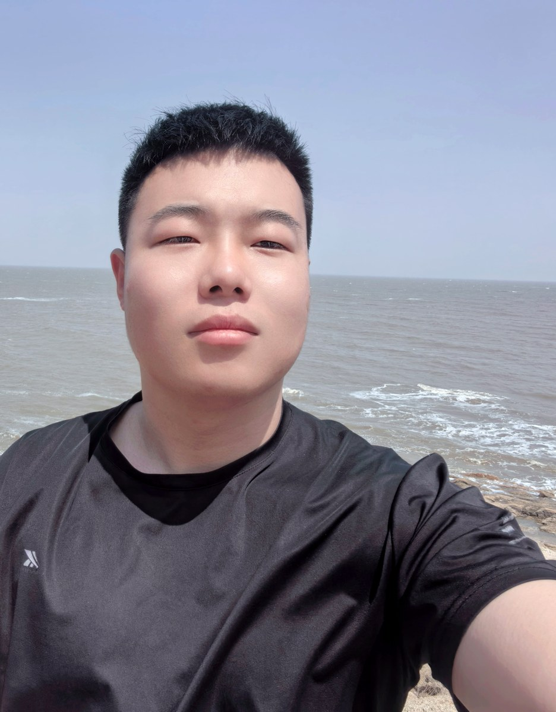

对好看的东西很难假装冷静
喜欢配色、排版、影像、空间和所有“哇，这个感觉对了”的瞬间。

ABOUT ME
我喜欢观察人与情绪，也喜欢把散落的想法变成能被看见的东西。这个主页会慢慢长出更多真实内容： 日常片段、个人经历、作品项目、旅行记录、社交媒体入口，还有我想长期经营的个人标签。
SIGNALS
喜欢配色、排版、影像、空间和所有“哇，这个感觉对了”的瞬间。
擅长从普通日常里抓亮点，让表达更有画面、更有人味。
比起空想，我更相信迭代。先让事情动起来，灵感才会追上来。
VIBE CHECK
这是一个可以继续升级的个人主页：后面能加照片墙、时间线、博客、作品详情、社交链接和暗黑模式。
WORKS
可以放旅行、写真、生活切片或视频合集。
适合展示小红书、公众号、播客、社媒账号或文章。
后续可以接链接、详情页、GitHub 或作品集 PDF。
CONTACT